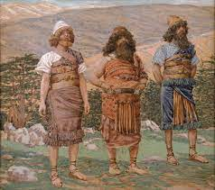
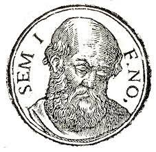
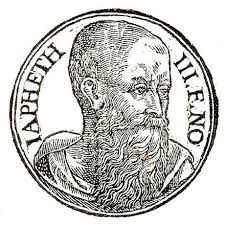
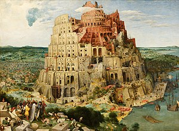

| Dios |
Al ver el Señor que la maldad del ser humano en la tierra era muy grande, y que todos sus
pensamientos tendían siempre hacia el mal, se arrepintió de haber hecho al ser humano en la tierra,
y le dolió en el corazón. Entonces dijo: «Voy a borrar de la tierra al ser humano que he creado. Y
haré lo mismo con los animales, los reptiles y las aves del cielo. ¡Me arrepiento de haberlos
creado!» Pero Noé contaba con el favor del Señor. |
 |
| Noé |
Una vez finalizado el diluvio, Dios lo bendijo a él y a su familia, le prometió que nunca más iba a
haber otro diluvio y puso el arco iris como señal. Más tarde se emborracho y su hijo Cam lo
deshonró, lo que termino en maldición para Cam y su descendencia. |
 |
| Cam |
Después del Diluvio, el Génesis dice que Noé comenzó a labrar la tierra y nos lo muestra plantando una viña, de cuyo vino se embriaga, Cam ve «la desnudez» de su padre y se ríe de Él (algunos sabios del Talmud piensan que no solo se rio de él, también abusó de él), el cual al saberlo pronuncia una maldición en contra del hijo de este, Canaán, del cual profetiza que llegará a ser esclavo de Sem y Jafet |
 |
| Sem |
Uno de los tres hijos de Noé, hermano de Cam y de Jafet. Se salvó del Diluvio junto a sus hermanos gracias al arca que su padre construyó. Según la tradición judía, los judíos y los árabes son sus descendientes. Es decir que fue antepasado de Jésus |
 |
| Jafet |
El nombre puede significar “expandir”, de la raíz aramea: פתה, tal como lo glosa la bendición atribuida a su padre (Génesis 9:26, 27), o bien belleza, de la raíz hebrea |
 |
| Torre de Babel |
Los descendientes de Noé, como únicos seres humanos del planeta, se desplazaron hasta la llanura de
Senar (Babel), todos hablaban un solo idioma, y decidieron construir una torre tan alta que llegara
al cielo |
 |